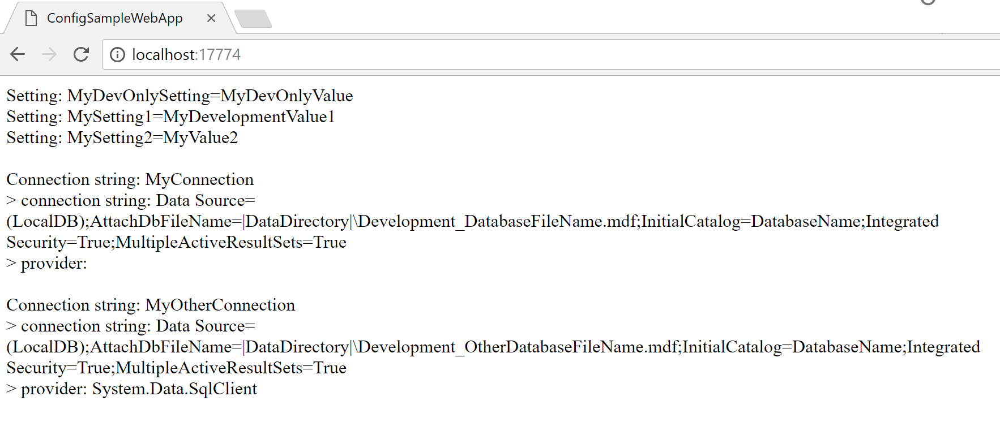

Use appsettings.json and environment overrides in classic ASP.NET apps
I have come to appreciate appsettings.json and the environment-specifics overrides like appsettings.Development.json/appsettings.Production.json.
They are easy to use, can be live edited without needing to restart the application and most importantly,
you can build once and run the same output in multiple environments.
In classic ASP.NET web apps, we have Web.config and then a number of transformation files like Web.Release.config. These configs are hard to maintain - I end up googling the XDT syntax every time. And then I somehow need to apply the transformation multiple times - once for each environment. This means publishing multiple times or using other build techniques to accomplish the same.
Of course there are alternatives like custom tokenization for Web.config. But the main problem remains: We need to maintain logic that makes sure that the right Web.config with the right values ends up on the server.
This is a pain. Even more pain when we want to switch between these values in development. E.g. use a local database for development, but also be able to switch to the internal dev-test environment to debug an integration issue.
The SlowCheetah Visual Studio extension helps a lot for this, but has other complexity issues to set up and build. There’s really no way around modifying the Web.config content even during development.
But the release of .NET Framework 4.7.1 now introduced a feature that changes everything.
Say hello to ConfigurationBuilder
In 4.7.1, you can create subclasses of System.Configuration.ConfigurationBuilder to hook into the configuration loading process.
ConfigurationBuilder allows you to modify the raw XML of any configuration section loaded from Web.config and/or modify the instantiated configuration section object before it is locked and passed on to the application for consumption. This means we can pull configuration from other sources transparently without needing to change anything else in the application. And of course this works for non-web applications (App.config) as well.
Plugging the ASP.NET Core config system into ASP.NET
Since the configuration system that ASP.NET Core uses is built for .NET Standard 2.0, we can use it on .NET Framework as well. This means we can use the same configuration sources available in ASP.NET Core as a source for a custom configuration builder.
We can even use config reloading to update AppSettings values on the fly without the need to restart the AppPool, which would mean a short downtime. Note that this does not work for connections strings, since they are read-only and shouldn’t be changed at runtime.
Step 1: Load the config
Let’s create the ConfigurationBuilder subclass, named AppSettingsJsonConfigurationBuilder:
public class AppSettingsJsonConfigurationBuilder : ConfigurationBuilder
{
#if DEBUG
private const string DefaultEnvironmentName = "Development";
#else
private const string DefaultEnvironmentName = "Production";
#endif
private readonly Lazy<IConfigurationRoot> Configuration = new Lazy<IConfigurationRoot>(() =>
{
var environmentName = Environment.GetEnvironmentVariable("ASPNET_ENVIRONMENT") ??
Environment.GetEnvironmentVariable("ASPNETCORE_ENVIRONMENT") ??
DefaultEnvironmentName;
return new Microsoft.Extensions.Configuration.ConfigurationBuilder()
.AddJsonFile("appsettings.json", optional: false, reloadOnChange: true)
.AddJsonFile($"appsettings.{environmentName}.json", optional: true, reloadOnChange: true)
.Build();
});
}
This part defines how the configuratin is loaded. I want to use the Development environment as default when in debug mode, which is what I will be doing in Visual Studio over 90% of the time. Otherwise, use Production. This code also allows to set environment variables on the server or IIS App Pool to select the current environment. For compatibility, ASPNETCORE_ENVIRONMENT is also used so we only need to set one variable should we already be running ASP.NET Core apps on the same system.
The Lazy<T> instance is just a fancy way to load the config files on first use only.
When accessed, the code loads a required appsettings.json file and an optional override json file for the current environment. by specifying reloadOnChange: true, we can later register for changes to the configuraitons.
Step 2: Process configuration sections.
There are two methos we can override on ConfigurationBuilder:
public abstract class ConfigurationBuilder : ProviderBase
{
public virtual XmlNode ProcessRawXml(XmlNode rawXml) {
return rawXml;
}
public virtual ConfigurationSection ProcessConfigurationSection(ConfigurationSection configSection) {
return configSection;
}
}
Modifying the XML content is useful for configuration sections that don’t provide easy to use editing APIs. For our purposes, we only need to override the ProcessConfigurationSection method.
So let’s override the method and foward to more specific methods for the app settings and connection strings sections (thankfully, c# 7 pattern matching makes this quite easy):
public override ConfigurationSection ProcessConfigurationSection(ConfigurationSection configSection)
{
switch (configSection)
{
case AppSettingsSection appSettingsSection:
return ProcessAppSettingsSection(appSettingsSection);
case ConnectionStringsSection connectionStringsSection:
return ProcessConnectionStringsSection(connectionStringsSection);
default:
return base.ProcessConfigurationSection(configSection);
}
}
Step 3: Fill app settings
The json for the app settings should be a “section” (both .NET Framework config and the Microsoft.Extensions config use the same naming here) of key-value pairs like so:
{
"AppSettings": {
"Key": "Value",
…
}
}
This code is used to pull the app settings out of the json config and performan add-or-update on the .NET Framework app settings configuration section:
private AppSettingsSection ProcessAppSettingsSection(AppSettingsSection section)
{
var appSettingsConfigSection = Configuration.Value.GetSection("AppSettings");
if (appSettingsConfigSection == null)
{
return section;
}
foreach (var setting in appSettingsConfigSection.GetChildren())
{
// keys that contain subsections have a null value
if (setting.Value == null)
{
continue;
}
if (section.Settings[setting.Key] is KeyValueConfigurationElement existingElement)
{
existingElement.Value = setting.Value;
}
else
{
section.Settings.Add(setting.Key, setting.Value);
}
}
return section;
}
Step 4: Load connection strings
The same needs to be done for connection strings. This time however we want to accomodate for both simple strings as connection strings and objects specifying both the connection string and the provider name.
private ConnectionStringsSection ProcessConnectionStringsSection(ConnectionStringsSection section)
{
var connectionStringsSection = Configuration.Value.GetSection("ConnectionStrings");
if (connectionStringsSection == null)
{
return section;
}
var connectionStringSettingsCollection = section.ConnectionStrings;
foreach (var setting in connectionStringsSection.GetChildren())
{
var key = setting.Key;
string value;
string providerName = null;
// keys that contain subsections have a null value
if (setting.Value == null)
{
value = setting["ConnectionString"];
providerName = setting["ProviderName"];
}
else
{
value = setting.Value;
}
if (value == null)
{
continue;
}
if (connectionStringSettingsCollection[key] is ConnectionStringSettings existingConnectionString)
{
existingConnectionString.ConnectionString = value;
if (providerName != null)
{
existingConnectionString.ProviderName = providerName;
}
}
else
{
connectionStringSettingsCollection.Add(providerName != null
? new ConnectionStringSettings(key, value, providerName)
: new ConnectionStringSettings(key, value));
}
}
return section;
}
Step 5: Reload app settings on changes
Since app settings can be modified during runtime, we can use the Microsoft.Extension.Configuration system’s reload functionality to register for changes.
This works by requesting a reload token and registering a change callback. The callback is only called once, so we need to reregister on every change.
To do this, we extend the ProcessAppSettingsSection from step 3 to register for the first change, use the ConfigurationManager api to modify app settings on change and re-register for further changes:
private AppSettingsSection ProcessAppSettingsSection(AppSettingsSection section)
{
// omitted. see step 3
appSettingsConfigSection.GetReloadToken().RegisterChangeCallback(AppSettingsSectionChanged, appSettingsConfigSection);
return section;
}
private static void AppSettingsSectionChanged(object configSectionObj)
{
var configSection = (IConfigurationSection)configSectionObj;
foreach (var setting in configSection.GetChildren())
{
if (setting.Value == null)
{
continue;
}
ConfigurationManager.AppSettings.Set(setting.Key, setting.Value);
}
configSection.GetReloadToken().RegisterChangeCallback(AppSettingsSectionChanged, configSection);
}
Step 6: Register the custom configuration builder in Web.config
Finally, we need to tell .NET Framework to use our shiny new confiugration builder. To do this, we need to modify the Web.config to add the following:
<configSections>
<section name="configBuilders" type="System.Configuration.ConfigurationBuildersSection, System.Configuration, Version=4.0.0.0, Culture=neutral, PublicKeyToken=b03f5f7f11d50a3a" restartOnExternalChanges="false" requirePermission="false"/>
</configSections>
<configBuilders>
<builders>
<add name="AppSettingsJsonConfigurationBuilder" type="ConfigSampleWebApp.AppSettingsJsonConfigurationBuilder, ConfigSampleWebApp"/>
</builders>
</configBuilders>
<appSettings configBuilders="AppSettingsJsonConfigurationBuilder">
</appSettings>
<connectionStrings configBuilders="AppSettingsJsonConfigurationBuilder">
<clear/>
</connectionStrings>
Putting it all together
For the sample app, the config files I used are:
appsettings.json:
{
"AppSettings": {
"MySetting1": "MyValue1",
"MySetting2": "MyValue2"
},
"ConnectionStrings": {
"MyConnection": "Data Source=(LocalDB);AttachDbFileName=|DataDirectory|\\DatabaseFileName.mdf;InitialCatalog=DatabaseName;Integrated Security=True;MultipleActiveResultSets=True",
"MyOtherConnection": {
"ConnectionString": "Data Source=(LocalDB);AttachDbFileName=|DataDirectory|\\OtherDatabaseFileName.mdf;InitialCatalog=DatabaseName;Integrated Security=True;MultipleActiveResultSets=True",
"ProviderName": "System.Data.SqlClient"
}
}
}
appsettings.Development.json:
{
"AppSettings": {
"MySetting1": "MyDevelopmentValue1",
"MyDevOnlySetting": "MyDevOnlyValue"
},
"ConnectionStrings": {
"MyConnection": "Data Source=(LocalDB);AttachDbFileName=|DataDirectory|\\Development_DatabaseFileName.mdf;InitialCatalog=DatabaseName;Integrated Security=True;MultipleActiveResultSets=True",
"MyOtherConnection": {
"ConnectionString": "Data Source=(LocalDB);AttachDbFileName=|DataDirectory|\\Development_OtherDatabaseFileName.mdf;InitialCatalog=DatabaseName;Integrated Security=True;MultipleActiveResultSets=True"
}
}
}
Then i created a Default.aspx site that uses ConfigurationManager to list all app settings and connection strings. The result is:

This means i can now create more appsettings.*.json files and use the same build output for all environments, just setting different environment variables on the machines or App Pools.
Sample App
The sample app is hosted on GitHub at dasMulli/ConfigSampleWebApp.
Note on security.
Don’t forget to prevent your json files from being downloaded!
Martin A. Ullrich